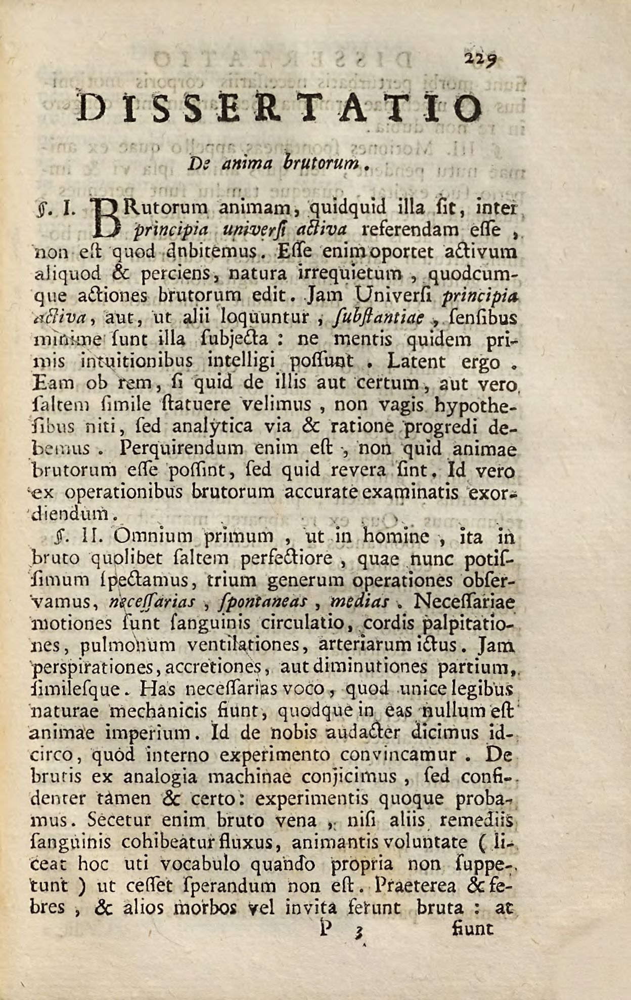
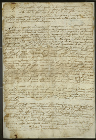
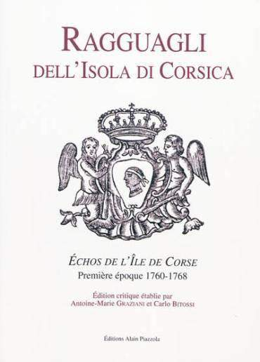
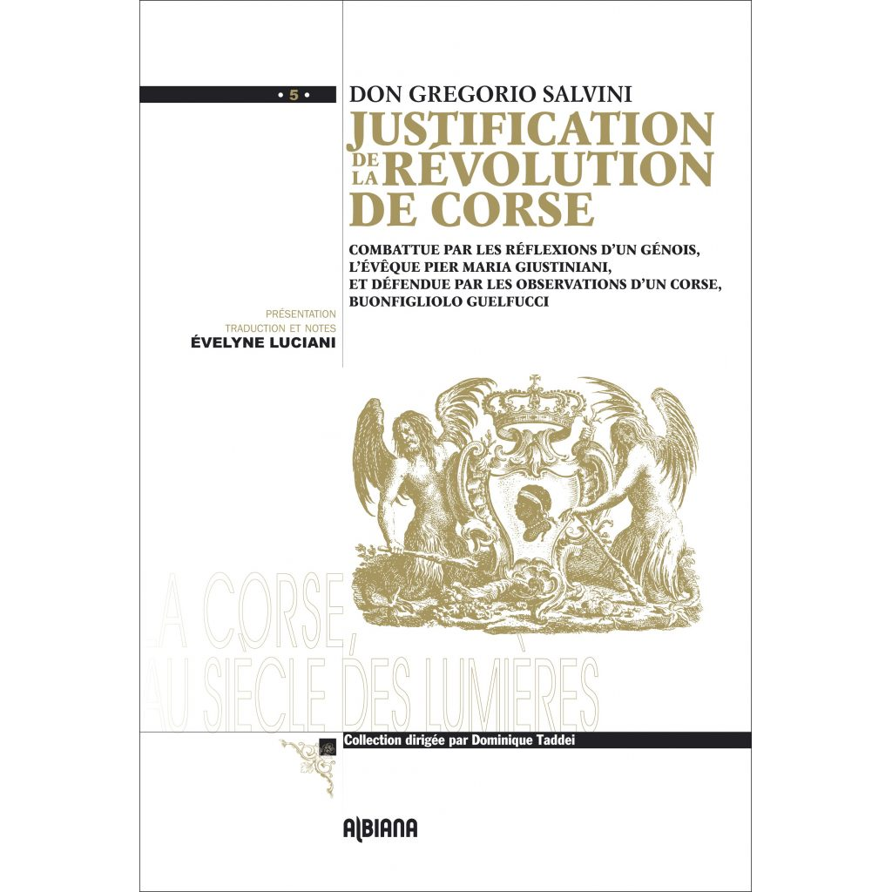
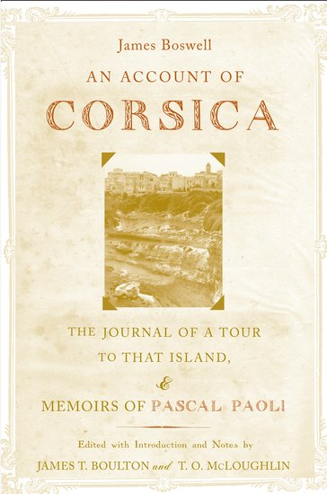
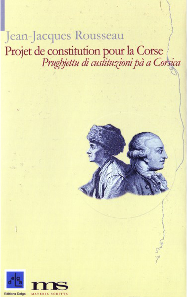

38:22 · 9 OPERE
Pascal Paoli: l'eroe corso che ha cambiato il mondo.
Il filo del discorso
Il relatore apre il ciclo Letture sulla storia con un ritratto di Pasquale Paoli, presentato come esempio di libertà e di autodeterminazione da riportare al centro della memoria europea. La formazione napoletana permette di collegare il giovane militare all’ambiente illuminista di Antonio Genovesi, alle riforme borboniche e al tema dell’uguaglianza. Il ritorno in Corsica introduce la costruzione dello Stato paolino: la consulta, il documento costituzionale del novembre 1755, il giornale, la zecca e l’università. Le opere di Salvini, Boswell e Rousseau mostrano come la vicenda corsa divenne oggetto di dibattito oltre l’isola. Il racconto passa poi dalla resistenza alla conquista francese del 1768–1769 al primo esilio britannico, dal rientro durante la Rivoluzione alla rottura con la Convenzione e all’esperienza del Regno anglo-corso. L’ultimo esilio e la morte a Londra chiudono la cronologia. Su questa trama il relatore costruisce una contrapposizione morale fra Paoli e Napoleone e una critica al linguaggio con cui la stampa descrive le aspirazioni indipendentiste. La scheda conserva questa prospettiva attribuendola al relatore e distingue la documentata notorietà internazionale di Paoli dalle ipotesi di influenza diretta sulle costituzioni successive. Precisa inoltre alcuni passaggi cronologici e i limiti storici dell’espressione suffragio universale applicata alla Corsica settecentesca.
I libri nel discorso

Dissertatio de anima brutorum
Prima pagina del saggio: edizione 1748: Pagina iniziale autentica della Dissertatio, p. 229 della Pars altera degli Elementorum metaphysicae, Venezia, Tommaso Bettinelli, 1748. Esemplare Bamberg, Ph.o.206#3, digitalizzato nel portale MDZ; immagine 253 del facsimile.
Pagina originale con intestazione Dissertatio de anima brutorum, estratta dal facsimile storico. Non è una copertina esterna né una ricostruzione moderna. Il frontespizio del volume e il manifesto identificano Genovesi e l’edizione veneziana del 1748. La dissertazione è già attestata nella seconda parte napoletana del 1747; il 1743 pronunciato nel filmato non è trasferito automaticamente a questa parte.
De anima brutorum di Genovesi esplicito; data pronunciata 1743 da distinguere dalla Pars altera del 1747 e dalla riproduzione del 1748.
Passaggio 7:16 ↗ · Fonti e libro ↗
Se sieno più felici gl’ignoranti che gli scienziati. Lettere accademiche
Copertina: Immagine corrente dell’editore SugarCo, collana Classici italiani per il millennio, a cura di Gianmarco Gaspari, 208 pagine. Edizione bibliografica del 1993, Carnago, ISBN valido 9788871982502; la singola tiratura della fotografia non è stabilita.
Copertina autentica fornita da SugarCo: fondo azzurro, autore, titolo, Lettere accademiche e curatore leggibili. Il video cita espressamente il 1993, ma questa immagine del catalogo corrente non certifica l’esemplare mostrato. La scheda dell’editore stampa un ISBN con cifra finale 9, non valida: si conserva il riscontro catalografico con cifra finale 2, senza riprodurre il refuso.
Edizione SugarCo 1993 e curatore Gaspari espliciti, poi titolo delle Lettere accademiche.
Passaggio 7:34 ↗ · Fonti e libro ↗
Costituzione corsa del novembre 1755
Manoscritto del 1755: prima pagina, immagine ridotta: Riproduzione ridotta della prima pagina del manoscritto, Costituzione adottata dalla consulta di Corte, 18 novembre 1755, Archives de la Collectivité de Corse-Pumonti, 1 J 7/1. Riproduzione del documento dal catalogo Collection Corse, p. 88; l’immagine non è la copertina dell’edizione La Marge del 1996.
Provenienza Archives de la Collectivité de Corse-Pumonti, 1 J 7/1, riportata nel catalogo museale; la bassa risoluzione non consente una lettura diplomatica completa. La diversa edizione a stampa La Marge, Ajaccio 1996, 78 pagine, ISBN 9782865231188, con traduzione, note e commento di Dorothy Carrington e prefazione di Jean-Marie Arrighi, è verificata ma la sua copertina esterna non è qui riprodotta.
Costituzione paolina del novembre 1755 esplicita e discussa nel suo contenuto politico.
Passaggio 11:32 ↗ · Fonti e libro ↗
Ragguagli dell’isola di Corsica
Raccolta critica: Ragguagli, 1760–1768: Copertina della raccolta critica Ragguagli dell’isola di Corsica / Échos de l’île de Corse, Première époque 1760–1768, Alain Piazzola, Ajaccio, 2010, edizione di Antoine-Marie Graziani e Carlo Bitossi, traduzione di Graziani, 698 pagine secondo BnF, ISBN 9782915410778.
Copertina autentica della raccolta moderna: titolo rosso, stemma corso e nomi dei curatori. Non è la prima pagina di un singolo numero settecentesco, né una opera composta nel 2010 da Paoli. La raccolta copre la prima epoca 1760–1768; il periodico prosegue fino al luglio 1769. Si preferiscono le 698 pagine del catalogo nazionale alle 250 indicate nella scheda commerciale che fornisce l’immagine.
Ragguagli dell’isola di Corsica espliciti, come giornale del governo dal 1760.
Passaggio 14:35 ↗ · Fonti e libro ↗
Giustificazione della rivoluzione di Corsica
Edizione francese: Albiana, 2013: Copertina dell’edizione francese Justification de la Révolution de Corse, Albiana, 2013, 576 pagine, presentazione, traduzione e note di Évelyne Luciani, ISBN 9782824104218. Il volume riprende l’edizione ampliata del 1764 e include anche la controversia con Pier Maria Giustiniani e Bonfigliolo Guelfucci.
Copertina originale Albiana bianca e oro, con nome di Don Gregorio Salvini, titolo, Luciani e stemma. Contiene testi polemici aggiuntivi, indicati in copertina: non si attribuisce tutto il volume al solo Salvini. Opera originariamente pubblicata nel 1758; il riferimento del relatore alla seconda edizione è normalizzato prudentemente come ampliamento del 1764, dato che si distinguono più stampe già nel 1758.
Gregorio Salvini, titolo e dedica a Paoli dell’edizione ampliata espliciti.
Passaggio 15:52 ↗ · Fonti e libro ↗
An Account of Corsica, The Journal of a Tour to That Island, and Memoirs of Pascal Paoli
Copertina: Copertina Oxford University Press, 2006, edizione con introduzione e note di James T. Boulton e T. O. McLoughlin, ISBN 9780195165838. Originale del 1768, distinto dal viaggio in Corsica dell’autunno 1765.
Immagine fornita dal servizio pubblico di copertine Oxford: autore, intero titolo, curatori, paesaggio centrale e cornice leggibili. Il catalogo digitale scrive McLaughlin, mentre la copertina reca McLoughlin: si mantiene la grafia sul volume. Il titolo non è ridotto al solo Journal, che circola anche separatamente; non si identifica l’edizione mostrata nel video.
Boswell, resoconto della Corsica e memorie di Paoli espliciti; viaggio del 1765 distinto dall’edizione del 1768.
Passaggio 17:43 ↗ · Fonti e libro ↗
Vite parallele
Fotografia dei tre volumi delle Vite parallele: Einaudi, 1958, traduzione di Carlo Carena, tre volumi in cofanetto; fotografia dell’insieme.
Fotografia autentica dell’opera in tre volumi, non una singola copertina. Edizione identificata dal catalogo antiquario e dal riscontro bibliografico; non accertata come esemplare del video.
Plutarco e vite degli uomini illustri espliciti nel paragone con Paoli; nessuna traduzione determinata.
Passaggio 18:05 ↗ · Fonti e libro ↗
Il contratto sociale
Copertina: Laterza · Economica · ristampa 2023 · edizione di riferimento
Contratto sociale di Rousseau, 1762, e passo sulla Corsica espliciti, riscontrati in II,10.
Passaggio 19:07 ↗ · Fonti e libro ↗
Projet de constitution pour la Corse
Copertina: Copertina bilingue Projet de constitution pour la Corse / Prughjettu di custituzioni pà a Corsica, Materia Scritta e Delga, 2012, traduzione corsa di Stefanu Cesari, 174 pagine secondo editore e Biblioteca nazionale svizzera; ISBN valido 9782915854374.
Copertina autentica gialla con titoli francese e corso, ritratti e marchi Delga e Materia Scritta. La pagina Delga riporta una cifra finale ISBN 1 non valida; il catalogo nazionale svizzero riscontra 9782915854374. Non si assume l’ISBN errato né la paginazione 184 di alcuni negozi. Il titolo tradizionale raccoglie scritti incompiuti del 1765; non è la costituzione approvata nel 1755 né un testo attuato da Paoli.
Progetto di una costituzione per la Corsica, incompiuto, esplicito; richiesta di Buttafoco del 1764 e redazione dei manoscritti del 1765 distinte.
Passaggio 20:33 ↗ · Fonti e libro ↗